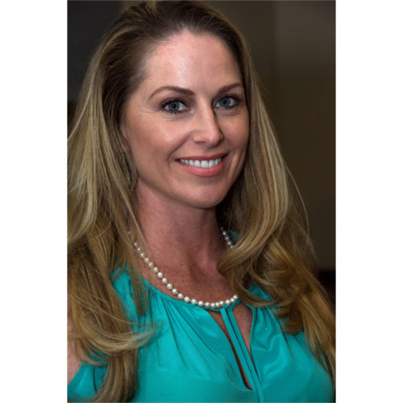

Every child is special and Jake was no exception. He almost always had a smile on his face, especially when he met people. He understood humor and had the ability to create his own happiness from all the good and wonderful things this life has to offer. He loved the simple things like lights, fans, frogs, spiders, lizards, shapes, the moon and his favorite thing, pushing his baby stroller around.
On November 30, 2013, while visiting family in New Smyrna Beach, the Morrison’s lives as they knew them changed forever. At approximately 6:00 pm the words “Where is Jake” were screamed out and the frantic search for their precious son began. It was pitch dark outside and knowing that their son had fallen off the dock into the Intracoastal and they couldn’t save him will forever haunt them. After about 20 minutes of screaming and searching for Jake he was found and taken by ambulance immediately to the hospital where they were not able to revive him.
Not a day goes by that the Morrison’s don’t miss their little boy. But through the pain and tears they have made it their mission to keep Jake’s joyous spirit alive. As a result, the Morrison’s established the Live Like Jake Foundation to provide awareness for drowning prevention and SAVE LIVES.
What does it mean to Live Like Jake? Many people can remember how it was to be a child, full of life, fascinated with nature and the world around them…For the Morrison’s to “Live Like Jake” means living with no prejudgments, needing very little to be happy, not getting bogged down with petty things or inconsequential circumstances. Also, for us it means to try and be a positive spark to people we meet and to greet everyone with a smile. You never get over losing a child; you only are only able to get through it and the only way to get through it is by faith. In honor of Jake, the Morrison’s try their best to keep a smile on their face, laugh when they can, and do their best to live everyday like their son Jake would have!
Awareness
To bring knowledge and inspire awareness to the public about drowning prevention.
Education
To help provide swim scholarships to families who don't have the means for their own children.
Love
To provide financial and emotional support to families who are grieving the loss of a loved one.
Connection
To connect people and be a channel of purpose through social media and in-person events.

Keri Morrison
Executive Director
Keri is a Palm Beach County native and the president of the Live Like Jake Foundation. She is married to her husband of 13 years Roarke Morrison and the mother of 3 beautiful children, Jake, Julia and Josie. When she is not working for the Foundation she is enjoying every minute she can with her family doing all the fun things Palm Beach County has to offer. Keri’s children especially love to swim so they spend a lot of time in the water.
Keri has been a licensed real estate agent for over 15 years specializing in New Home Sales for the first 8 years where she was awarded with the 2006 Gold Coast Builders Association Sales Person of the Year award and 2006 Excel Awards Sales Person of the Year. Until recently she also worked remotely as a Back Office Assistant for a New York based investment firm for 9 years.
Roarke Morrison
President
Roarke has been living in Palm Beach County since he was three years old. He attended the Benjamin School from preschool to the eighth grade and graduated from Cardinal Newman High School. When he was a child he became a competitive swimmer and then joined a surf team for Island Water Sports. He was nationally ranked in tennis when he was a junior in high school. He was also ranked in the top three tennis players in Florida. He attended the University of South Florida on a full tennis scholarship. His favorite hobbies are fishing, golfing, and spending time with his wife Keri and daughters Julia and Josie. Roarke is currently the president of R.K. Morrison and P.O.M. Performance Coatings as well as a director of the Live Like Jake Foundation.

Janis Evans
Secretary
Janis was a high school Mathematics teacher at Palm Beach Gardens High School for twenty-eight years. She was also head of the Math Department for about eight years. She received a B.S. in Mathematics from the University of Oklahoma. She was hired by Pratt and Whitney Aircraft in Florida as a computer-programmer following graduation from college.
She has three grown daughters and seven grandchildren. She retired from teaching five years ago and now keeps busy with her grandchildren, substituting in local high schools, and helping with the Live Like Jake Foundation.
Heather Laughlin
Director
Heather worked in the legal field as a paralegal and in the real estate and title industry for over 15 years before becoming the managing member of HRL Enterprises, LLC. She is, first and foremost, a wife and a mother to three beautiful children as well as an advocate for many important political and social causes. Her passion for God and helping others is what drives her every day. She currently sits on the Board of Directors for the Live Lake Jake Foundation. She also serves as the Treasurer for the Susan G. Komen Foundation South Florida Chapter and on the Advisory Council for the Place of Hope.
Stacy Van Santen
Director
Stacy resides in North Palm Beach with her husband and three children. After having her first child, she decided to enroll her in ISR Self-Rescue swim lessons. She immediately witnessed the value of this program and became an instructor in 2008. Prior to teaching the ISR swim lessons, she earned an A.S. degree in veterinary technology as well as a B.S. degree in interior design. She also has an OUPV captain’s license. She joined forces with the Live Like Jake Foundation in order to further her mission of preventing childhood drownings.
Scott Smith
Director
Scott is a 3rd generation South Floridian. He has a 16 year old daughter Savannah and a standard poodle named Addie. Scott enjoys boating, fishing, off roading and exploring the outdoors. Scott has been a licensed realtor for 30 years and earned his BBA in Real Estate and Finance from Florida Atlantic University. Scott is proud to work with Keller Williams Realty, the largest real estate company in the world. His team consists of his mother (45 years experience), Kellie Linder and Jill Sisson. They are proud of the fact that almost all their business is repeat and personal referrals.
Dr. Jeanmarie Connor
Director
Dr. Jeanmarie Connor grew up in Jupiter, Florida and attended The Benjamin School from preschool through her senior year in high school. She earned her undergraduate degree at Duke University and her medical degree at the University of Florida. She also completed her pediatric residency training and chief residency at Shands Hospital at the University of Florida. Dr. Connor is Board Certified by the American Board of Pediatrics and she is a Fellow of the American Academy of Pediatrics.
A co-owner of Premier Pediatrics of Palm Beach, Dr. Connor is thrilled to be caring for children in her hometown of Jupiter, Florida. Her husband, Dr. Michael Connor, is an oculoplastic surgeon in Palm Beach Gardens and they have four young children. As a pediatrician, Dr. Connor is very passionate about saving children from drowning accidents and joined the Live Like Jake team in 2019 in an effort to raise awareness to this important cause.